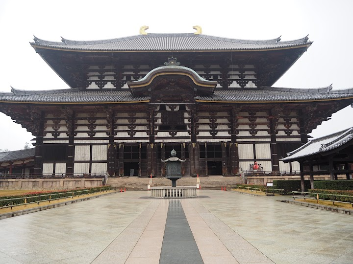
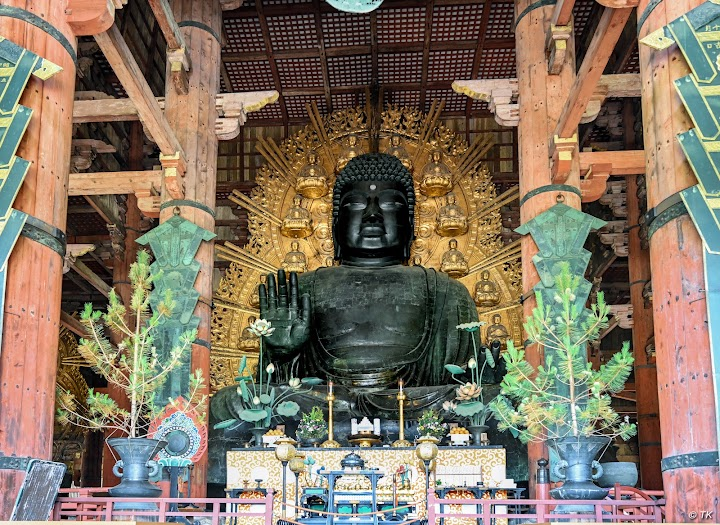
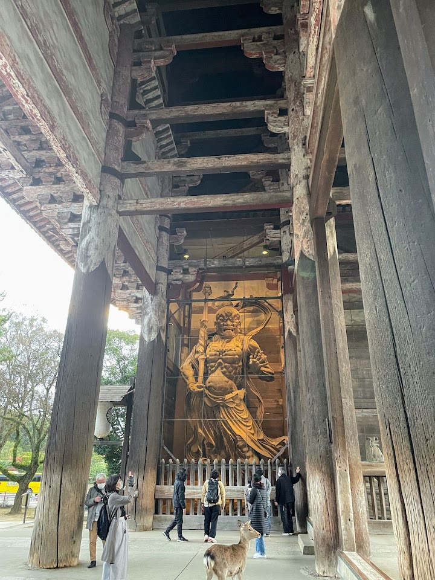
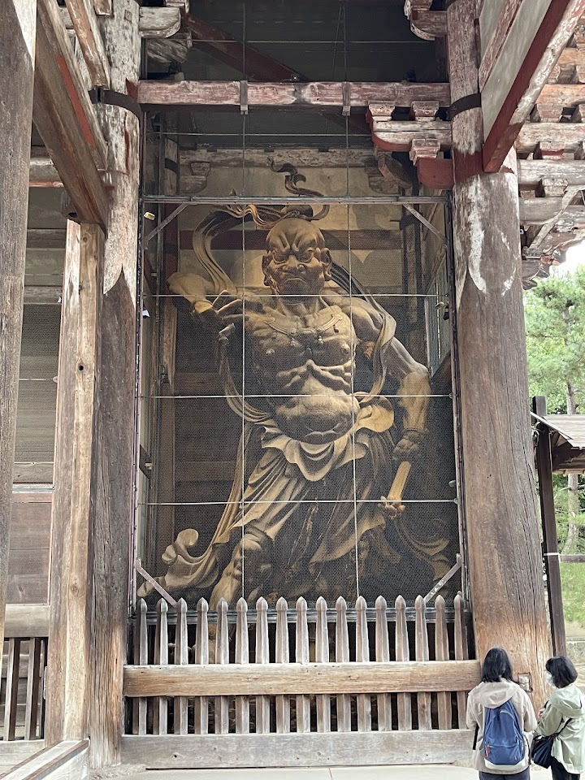
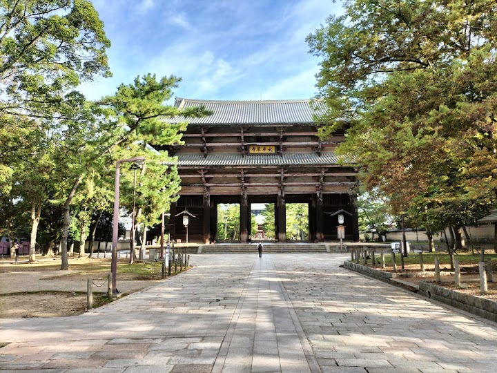

Nandaimon Gate
The Nandaimon Gate is the massive wooden main gate of Tōdai-ji, completed in 1203, with a double-tier roof and two fierce guardian statues (Nio) either side of the entrance. Walking through it feels like entering another world.
Open in Google Maps (street view, more photos and reviews there)






Visitor tips on finding it and getting there
Walking through Nandaimon Gate felt like entering another world—this is not just a gate, it’s a statement. The first thing that caught our attention (and honestly left us amazed) were the two massive guardian statues inside. These wooden figures are incredibly detailed and powerful—you can almost feel their energy as you pass between them. My family and I slowed down here more than expected, just taking in the craftsmanship and scale. Built in the 12th century, the gate itself is a masterpiece of traditional Japanese architecture. The open structure, the giant wooden pillars, and the sense o
Nandaimon Gate stands as one of the most striking entrances in Nara, offering a grand and historic welcome to the Todai‑ji temple complex. The structure is massive, with towering wooden pillars and intricate architectural details that immediately draw your attention. Walking through the gate feels like stepping into a different era, surrounded by centuries of craftsmanship and cultural significance. The open layout makes it easy to explore at your own pace, and the area rarely feels crowded thanks to its size. The atmosphere is calm and spacious, giving visitors a moment to take in the scale a
Our trip was really nice and we pet lots of animals. We tried to find food but we didn't find any. The entry for the statue is 800Yen for adult and 400 Yen for children but you have to pay in Cash. We had no cash so we didn't get to see it. The ATMs were a long walk away. We didn't need tickets to enter the park with the deer.